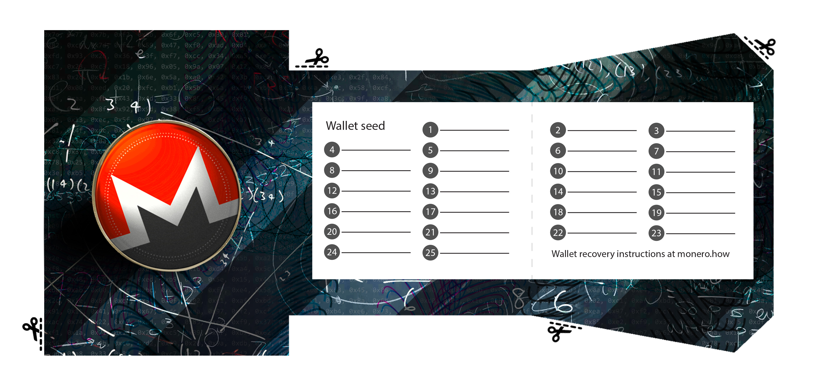
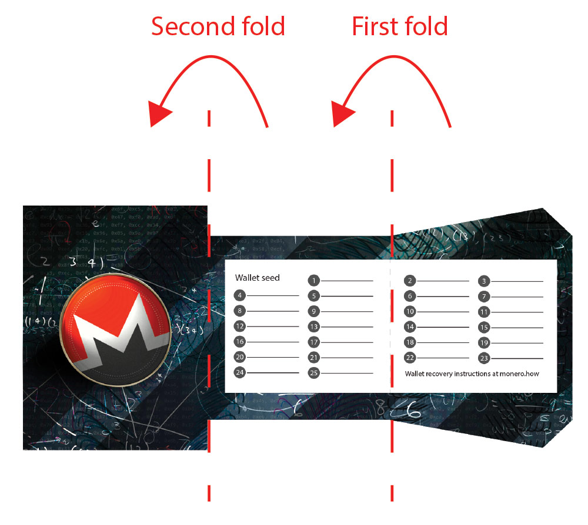
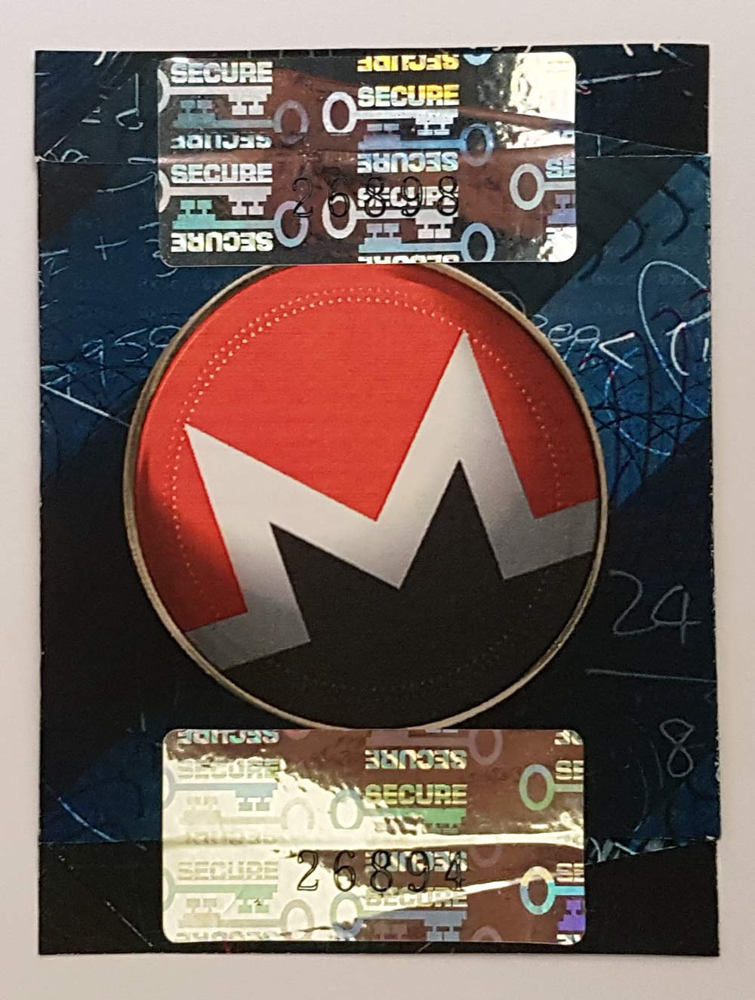
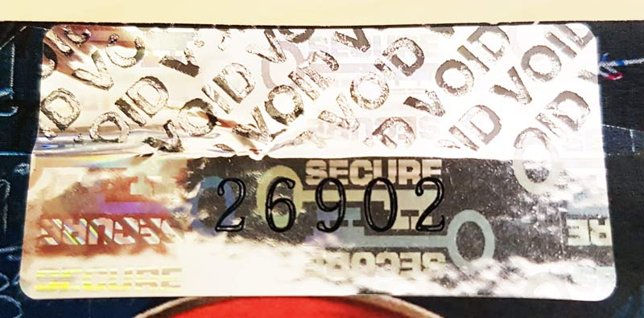
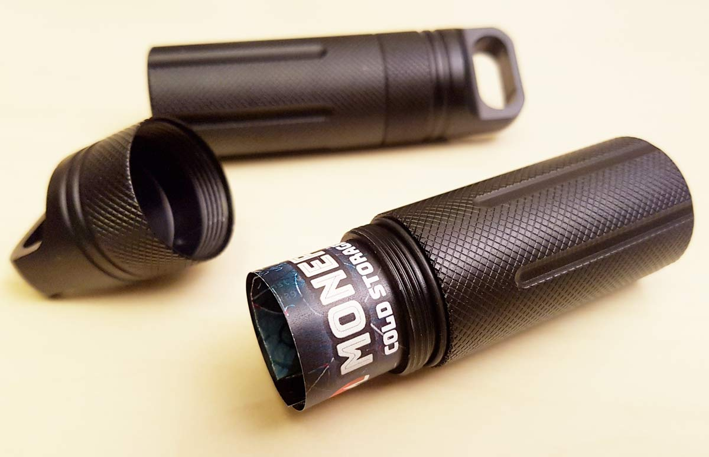
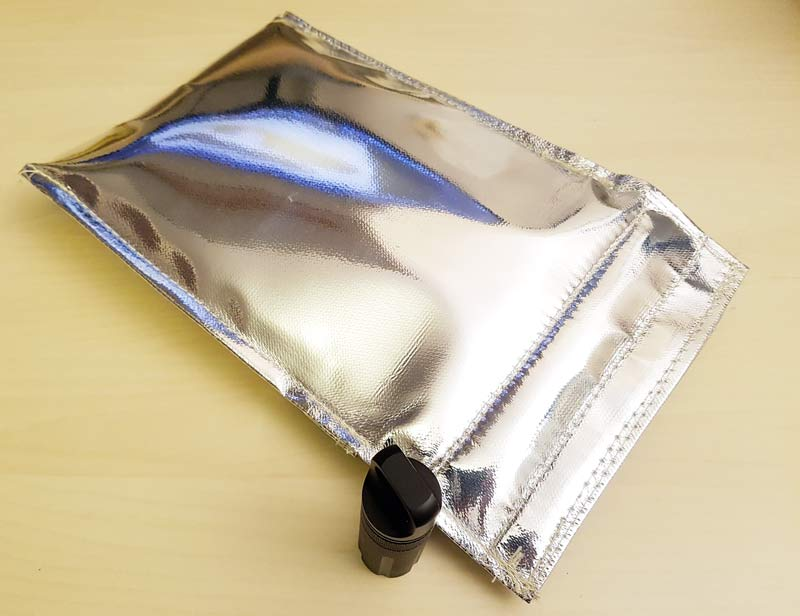

You can print your own Monero paper wallet using the resources on this page. Using a single sheet of paper, print
the first image below onto one side of the sheet, then replace the sheet into your printer upside down to print
the rear side of the paper wallet. Click each of the two images below to display them in full size, then print them landscape.
If your printer setup screen gives you the option, you may wish to scale the size of the printout to suit your tastes.
Paper wallet front side (click image then print)

Paper wallet rear side (click image then print)

After you have printed and cut out the wallet, write down your 25 word Monero seed onto the wallet using a ball point pen, or other
pen that contains permanent ink and that does not bleed or smudge. There is also room on the rear of the wallet to write the
date you created the wallet and any notes about the contents of the wallet.
The seed is the only piece of information you need to restore full access to your Monero funds. Note that although knowing the seed will
give you full access to your stored Monero, knowing the seed will not restore any address books, payment descriptions or list of TXKEYs (needed for proving existence of past payments) that you may have
stored in your online wallet. This will not be a problem if you are only using this wallet for offline storage of funds, since you will be using
a different online wallet for your day to day Monero transactions and you will be able to keep digital backups of that online wallet. For most people and most purposes,
knowing the 25 word seed is the only essential piece of information that needs to be kept safe in case of disaster.
After you have written the seed onto the wallet, fold the wallet as in the diagram below. If you are worried that the ink might transfer when the paper is folded,
you may wish to cut out a small square of blank paper and place it over the middle section of the wallet before making the first fold.

Security seals

For peace of mind, you can place numbered holographic security seals over the top and bottom of the folded section of your wallet, as in the photo below. You can find stickers like this on ebay or Amazon.
The seals ensure that you will be able to tell if anyone has gained access to and opened your wallet, as they will show a VOID pattern if tampered with.

If you don't need this level of security, you can use pieces of sticky tape instead of security seals.
Waterproofing and fireproofing your wallet
To prevent your pet from eating your wallet, water damage or fire damage, we recommend you purchase a 'pill capsule'. These are available on sites like ebay and Amazon for a few dollars each. Then
place the capsule in a fireproof safe, or in a fireproof bag.


A note about printer security
For security reasons, we chose to create a paper wallet that requires us to write the seed onto it with a pen instead
of printing the information directly onto the wallet.
This is to avoid security threats
from compromised printers and compromised smartphone QR readers. When you print something, there is a good chance
that the images are being sent unencrypted across your network and stored unencrypted in the printer's memory even
after the printing is complete. Because printer firmware tends not to be security hardened, it is not inconceivable
that a virus could exist either now or in the future that would scan all print jobs for anything resembling a
cryptocurrency key and transmit it to an attacker. We sleep better at night knowing that we used a pen.


 monero.how
monero.how